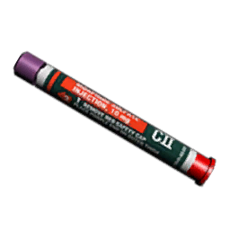
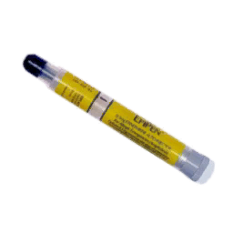

 MorphineThe strongest painkiller currently in common use. You'll be seeing a lot of these, and while ideally you won't need it, you'll probably end up using a lot of it too. As well as dealing with pain, they reduce the heart rate and blood pressure. Hence, it's best to limit their use. Sometimes you may need 2 to deal with your pain, but never stretch to a third. |
 EpinephrineA form of synthesised adrenaline. If you suffer a severe allergy, you'll be very familiar with these, as it's issued to sufferers and used to counter their allergic reaction. In ACE Medical, it's mostly used as a method to bring the heart rate back up, often to counter the side-effects of morphine. |
You don't really need to know about these; they're more the medics to worry about.
They are both used to controllably lower the heart rate. However, situations where the heart rate is too high rarely ever occur, so even the medics are fairly safe neglecting these.
Note: It is highly recommended that you do not administer any injectors yourself unless you really need it. Instead, get a medic to do it for you; if you have any in your inventory, they will be automatically used first anyway. At the very least, make sure any medics that may be treating you are aware of what you've taken.